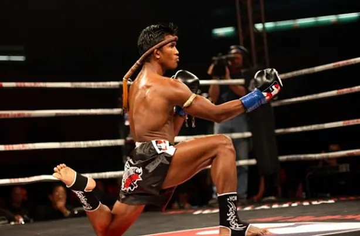
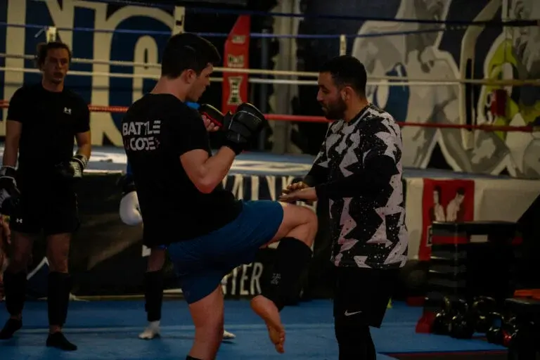
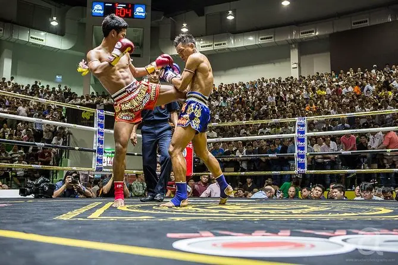
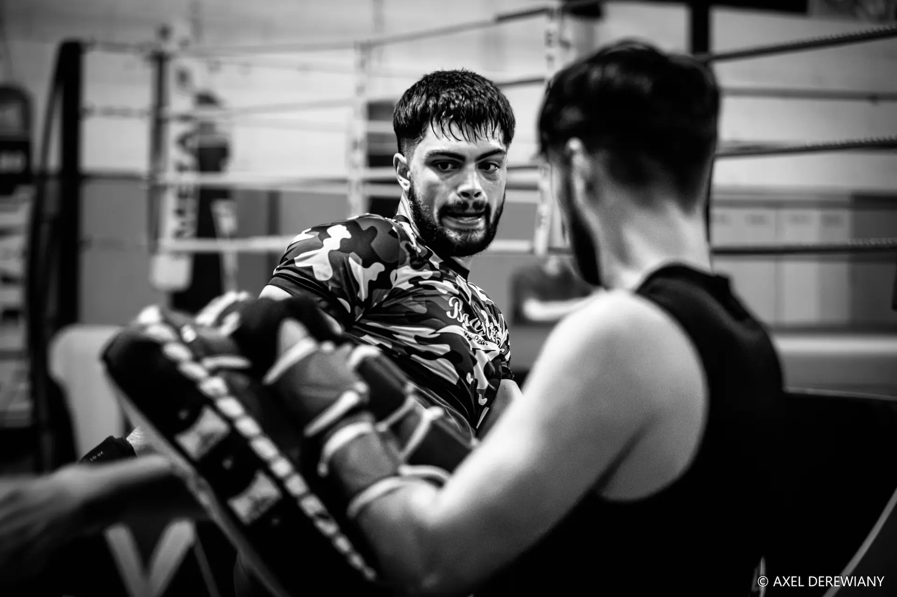

Poings & pieds
Boxe + kicks puissants, low kicks dévastateurs, teeps pour gérer la distance.
Muay Thai — art martial et sport de combat. Tradition, 8 armes, condition de fer. Cours labellisés Boxe Thaï / K1 à Saint-Cyprien.

La Boxe Thaï (Muay Thai) est née en Thaïlande comme art de combat national. Elle se distingue par l’usage des poings, pieds, genoux et coudes, le clinch, et un rapport fort à la tradition (Wai Kru, respect du ring).
À Toulouse, tu la pratiques dans un cadre moderne pieds-poings : technique, paos, sac, condition — avec une ouverture vers le K1 selon le créneau et le niveau.
Boxe + kicks puissants, low kicks dévastateurs, teeps pour gérer la distance.
Armes courtes typiques du Muay Thai — travail progressif et sécurisé en club.
Contrôle du corps, balayages, genoux au corps. Savoir entrer et sortir proprement.
Les deux se nourrissent : beaucoup de pratiquants toulousains mêlent bases Kick / K1 et culture Thaï sur les mêmes créneaux.
Cardio élevé, jambes d’acier, souffle de round.
Précision, timing, lecture de distance.
Discipline, respect, confiance sous pression.
Débutant bienvenu ; intensité adaptée par les coaches.

Travail de précision et d’enchaînements sous guidance.

Sac, partenaires, rounds chronométrés.

Exigence et bienveillance — tous profils.
Saint-Cyprien — Boxe Thaï / K1 : mardi 12h40–13h20 & 20h00–21h15 ; jeudi idem ; vendredi 19h00–20h00 ; samedi 18h20–20h00. Adresse : 11 rue Sainte-Lucie, 31300 Toulouse.
États-Unis — Boxe Pieds Poings : striking lié (Kick / K1). Ce n’est pas un créneau « Boxe Thaï seule ». Utile si tu veux du volume pieds-poings au nord de Toulouse (388 avenue des États-Unis, 31200).
Planning détaillé : Cours Pieds-Poings Toulouse.
Séance d’essai sur un créneau Boxe Thaï / K1 à Saint-Cyprien.